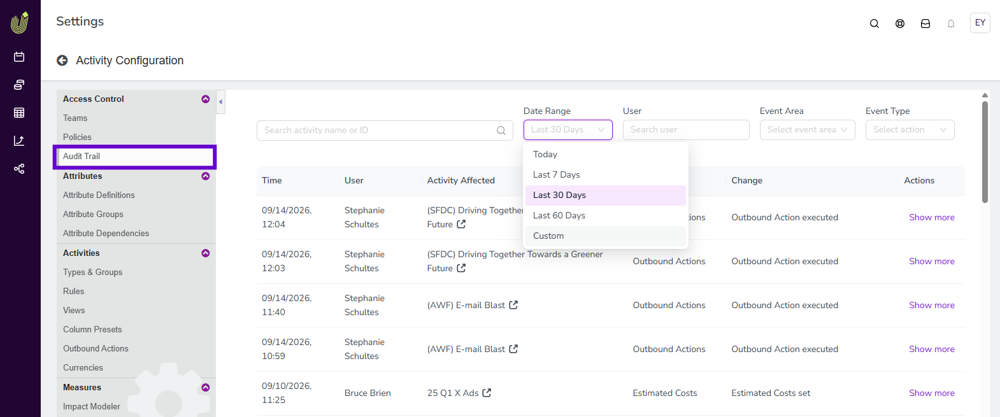

What's new: 2026.9
Discover all the new Uptempo features introduced with the 2026.9 release, available from September 30, 2026.
Campaign Management: Activity Configuration
View a centralized audit trail for activities
Campaign Management admins can view a centralized audit trail of all activity changes directly in Uptempo.
Track every change: See exactly which activities changed, which data points were updated, when the change occurred, and who made it. Changes to different areas of an activity, such as Estimated Costs, connected funds, and KPIs, are recorded as separate entries.
Access logs on demand: Review the logs at any time in Activity Configuration > Access Control > Audit Trail in Campaign Management.
Find records faster: Search and filter the log to locate specific changes by activity name or ID, date range, user, and the area and type of change.
View change details: Select Show more on any entry to compare the Old value and New value for that change.


Campaign Management: Activities
Compare Estimated Costs and connected spend in a single table
You can view Estimated Costs and connected investment data together in one table on an activity, making it easier to compare planned budget against actual spend across multiple years.
Analyze variance without toggling: Compare Estimated Costs and connected investment amounts side-by-side in a single table in the Budget section of an activity's details, instead of switching between two separate tables and mapping the values yourself.
Work across multiple years: Use a single control to change the year in view, rather than selecting the same year separately on two tables.

Create investment line items directly from an activity
You can create and connect a new investment line item from the  Activities section while selecting which investments to connect to the activity.
Activities section while selecting which investments to connect to the activity.
Save time with a more streamlined workflow: When you connect an activity to funding, you can create a new line item directly in the investment picker. If the line item you need to connect doesn't exist yet, you no longer need to disrupt your workflow by leaving the activity to add the line item in the
 Investments section.
Investments section.Connect right away: You can connect new line items immediately after you create them, so you can finish the task of connecting funding to the activity right away. Line items created from the investment picker start with no funds assigned, so you can close the loop on allocating specific amounts later, during the investment planning phase.

Financial Management: Budgets
Sync carryover spend items after a rollover
After an annual rollover, it's easier and faster to sync late-year and newly created investment items into the new fiscal year.
Streamlined line item copy workflow: The new line item copy workflow makes it much faster for your Uptempo specialist to synchronize your new fiscal year investment plan with the latest updates from the prior year, saving you time and effort during the rollover period.
Customizable data transfers: You can specify exactly what data you want to copy with each synchronized line item, whether that's only the line item itself, or everything from attribute data, to cell values, to activity connections and allocation amounts.
Automated routing and mapping: Uptempo reads the Persistent IDs to route each line item to the correct destination budget, and maps old data to the new fields regardless of any text-based name changes in the new fiscal year.
Missing parent categories are created for you: If a line item's parent category doesn't exist in the destination budget, Uptempo creates it first, including its Persistent ID, and then copies the line item into it. If a category with the same name already exists, Uptempo reuses it rather than creating a duplicate.
Unmatched items don't stop the sync: Line items that have no matching destination budget are skipped and listed in an output file. The rest of the sync completes, and you can review the skipped items afterward.
Redirect items after a restructure: If your budget hierarchy changed, your Uptempo specialist can specify a destination budget for individual line items, so they land in the right place in the new fiscal year.
Keep actuals and PO imports working after a rollover or rename
Your Uptempo specialist can now base the mapping rules for your actuals and purchase order (PO) imports on the Persistent IDs of budgets and folders, instead of their names.
Imports survive renames: Mapping rules that use Persistent IDs keep working when you rename a budget or folder, so your actuals and PO imports continue to map to the right budgets and folders.
Smoother fiscal year rollovers: The rules follow your budgets and folders into the new fiscal year, so your imports run without rule repairs after the rollover.
What's new: Uptempo Public API
The Uptempo Public API reference is now the single, official source for API documentation.
Find everything in one place: Every endpoint, schema, and example is in the Uptempo Public API reference.
Build new integrations on Uptempo URLs: Use the Uptempo base URL for new integrations, and store it in configuration rather than hardcoding it.
Existing integrations keep working: Integrations that call Allocadia URLs today need no changes right now. We will share advance notice before anything changes.
Activity API is now generally available
The Activity endpoints that were in Early Access are now available to all customers, with no feature enablement needed.
Now generally available: Activities, activity actual results (read and write), activity KPIs, activity actual KPIs, Estimated Costs, and planned impact.
Delete activities through the API
You can now delete an activity by ID through the API, so you can clean up incorrectly created activities without administrator help.
See who created an activity and when it last changed
Activity responses now include creator and change tracking, so integrations can attribute records and pick up only what changed.
Created by: Each activity returns a
createdByobject with the user'sid,username,firstName,lastName, andenabledstatus. Theusernameis the user's email address.Last modified date: Detect changed activities without comparing full records.
Older records: Activities created before March 2026 don't include
createdBy.
Work with currencies and exchange rates
You can now handle multi-currency budgets through the API instead of calculating conversions in your integration.
Read exchange rates: Get a budget's currency and exchange rates.
Entry currency on line items: Read and write the original currency a line item was entered in.
Create in any currency: Specify a currency when you create a line item.
See who created a line item
Line item responses now include the same createdBy object as activities, across single, list, tree, and bulk job results. Line items created before March 2026 don't include createdBy.
Read column dependencies
You can now read a budget's column dependency mappings, meaning each controlling column and its dependent columns, using standard API authentication. Budgets with no mappings return an empty result.
Fixes and behavior changes
Linking a line item to an activity now reports failures:
POST /v1/activity-investments/linkreturns409 Conflictwith an explanation when a link isn't created, for example when the line item is already linked or is in automatic allocation. It previously returned200without linking. Review any integration that treats200as the only expected response.Timestamps now return correct UTC values: Activity created, updated, and in-market dates, line item created and updated dates, and user account creation dates were shifted by the server's time zone offset in some cases. If your integration adjusted for this offset, remove that adjustment.
Duplicate attribute option names: Saving attribute options with the same name now returns an error instead of reporting success without saving.